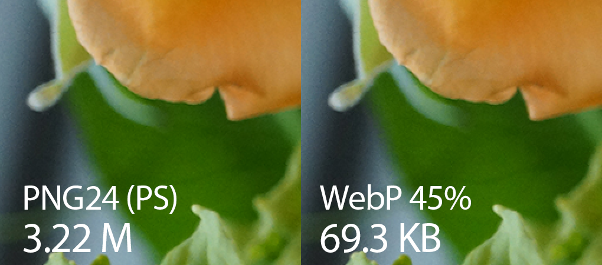
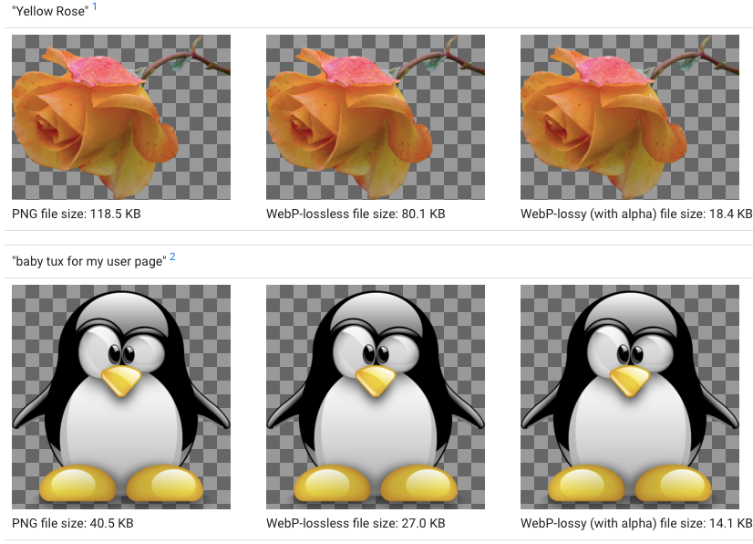

.jpeg "форматы изображений")
WebP - это формат файлов изображений, разработанный Google и предназначенный
для замены форматов файлов JPEG, PNG и GIF. Он поддерживает сжатие как с потерями,
так и без потерь, а также анимацию и альфа-прозрачность.
Google анонсировала формат WebP в сентябре 2010 года и выпустила первую
стабильную версию своей поддерживающей библиотеки в апреле 2018 года.
Сразу перехожу к преимуществам данного формата перед другими вышеупомянутыми форматами:
При всём этом из очевидных недостатков я бы выделил только:
Преимущества и недостатки обобщены мной по результатам сбора инфы из 9 разных интернет-источников.
Судя по этим данным, для изображений можно использовать формат WebP практически во всех случаях.
Но всё ли так однозначно?
Для лучшего сравнения приведу несколько изображений, взятых отсюда.
Казалось бы, всё очевидно:

Но вот вам для сравнения
►фото◄,
с возможностью поиграться ползунком, в котором очень важна детализация.
Вот это и есть тот самый пластиковый вид(или "мыло"), который проявляется в сильном сжатии
детализированных снимков формата WebP.
А вот ►пример◄,
в котором для хорошего отображения деталей WebP занимает места даже больше!!!, чем JPEG!
Но на этом реально значимые минусы формата WebP в сравнении с JPEG заканчиваются
(отсутствие прогрессивности нивелируется и без того уменьшенным в большинстве случаев
размеров файла WebP, и как следствие, значительным увеличением скорости загрузки интернет-страницы).
Во всех остальных примерах WebP демонстрирует уверенное преимущество, особенно в градиентах.
А вот техническое сравнение наиболее распространенных форматов изображений:
Уже по количеству плюсов можно сделать позитивные выводы по формату WebP, а ниже приведено графическое подтверждение преимущества файлов WebP в сравнении с форматом PNG▼:
 
... и форматом GIF:
это GIF размером 84 килобайта

а это WebP размером 68 килобайта

В общем, разницы не видно, а 16 килобайт экономии налицо! И плюс WebP полноценно
поддерживает прозрачность, чем GIF похвастаться не может! И контрольный Gif-у - WebP
поддерживает анимированность!
Учитывая всё более увеличивающуюся поддержку WebP, в скором времени этот формат по праву займёт
лидирующую позицию в WEB-индустрии!